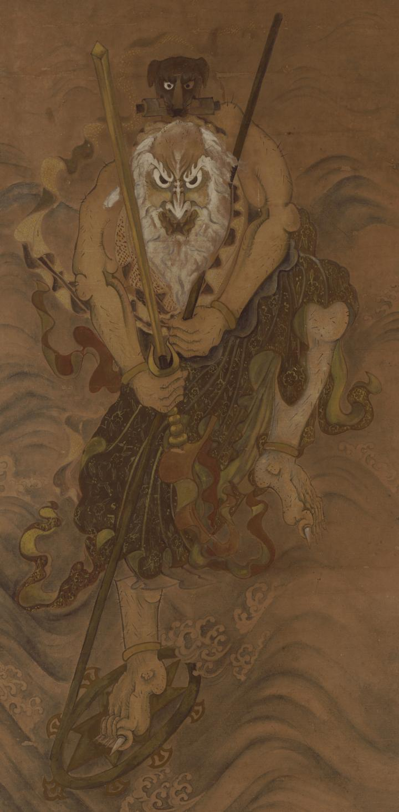

波の上で法輪に乗る老人。白鬚で筋骨たくましく、足には鋭い爪が生えている。腰巻きを身に付け、右手には剣を持っている。老人の背には、巻物をくわえた黒い犬が乗っている。
出典：親書誌：U426_nichibunken_0284：[犬神図]；イヌガミ ズ／日付：2014／資源識別子：U426_nichibunken_0284_0001_0000
Copyright (c)2010- International Research Center for Japanese Studies, Kyoto, Japan. All rights reserved.